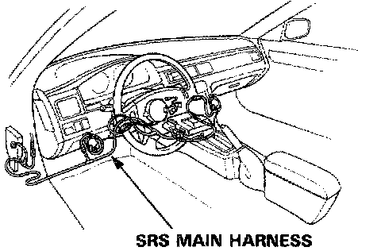
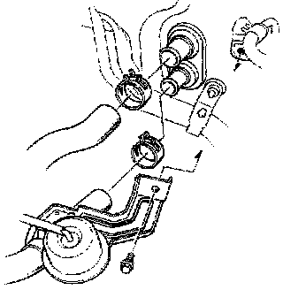
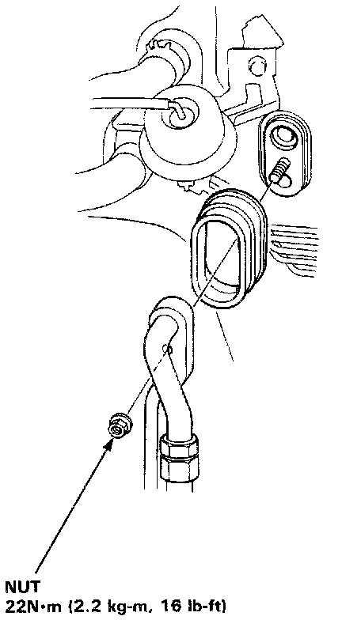
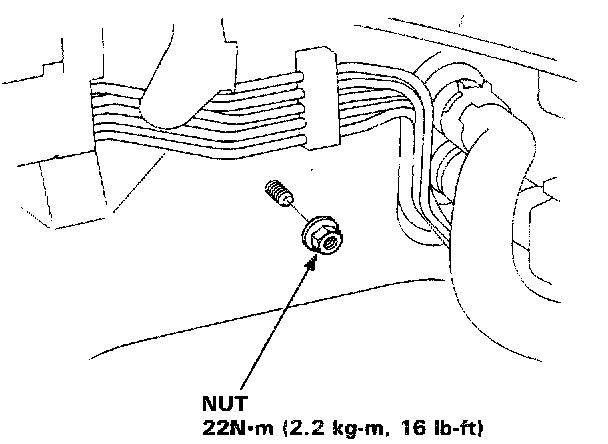
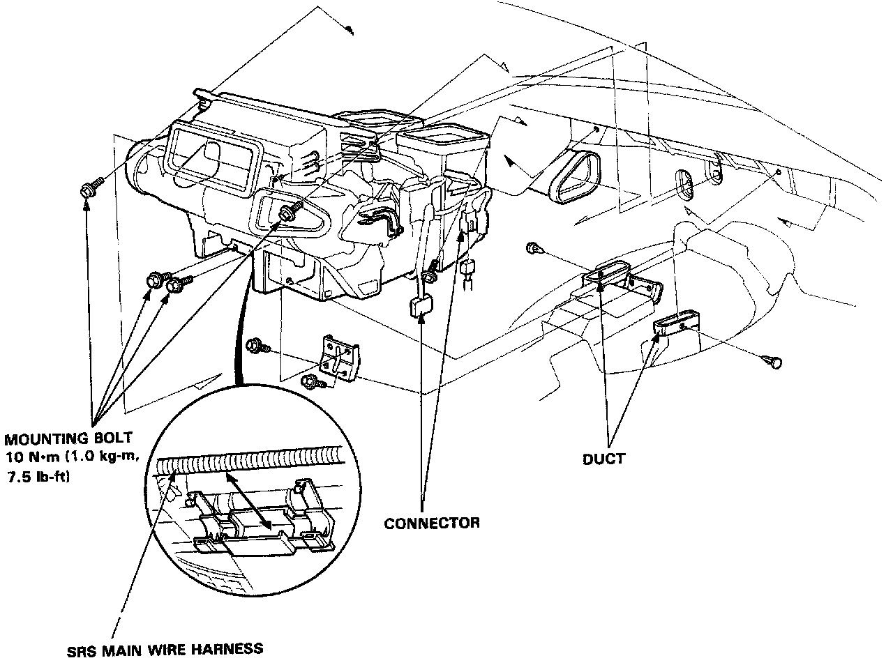

Evaporator Case: Service and Repair
HEATER-EVAPORATOR ASSEMBLY REPLACEMENT
SRS wire harness is routed near the heater evaporator.
CAUTION:
- All SRS electrical wiring harnesses are covered with yellow outer insulation.
- When disconnecting the SRS wire harness in- stall the short connector on the airbag then disconnect the wire harness.
- Replace the entire affected SRS harness assembly if there is an open circuit or damage to the wiring.
1. Remove the dashboard.
2. When the engine is cool drain the coolant from the radiator.
Warning
- Do not remove the radiator cap when the engine is hot; the coolant is under pressure and could severely scald you.
- Keep hands away from the radiator fan. The fan may start automatically without warning and run for up to 30 minutes, even after the engine is turned off.
CAUTION: Radiator coolant will damage paint. Quickly rinse any spilled coolant off painted surfaces.
3. Disconnect the heater hoses at the heater. Coolant will run out when the hoses are disconnected; drain it into a clean drip pan.

4. Release the clamps, then disconnect the heater hoses.
5. Remove all refrigerant from the A/C system with a refrigerant recovery system.

6. Disconnect the receiver line and the suction line from the evaporator.

7. Remove the heater-evaporator mounting nut.

8. Remove the duct and disconnect the connector, then remove the heater-evaparator mounting bolts.
9. Install in the reverse order of removal, and:
- Apply sealant to the A/C line grommets.
- Do not interchange the inlet and outlet heater hoses. Make sure that the hose clamps are tight.
Refer to Blower Motor. Blower Motor
Refer to Evaporator Core. Evaporator Core
Refer to Heater Core. Heater Core
CAUTION: After reinstalling the heater-evaporator, follow the sequence described in the air bleed procedure. If you don't, you may leave air in the system which could damage the engine.